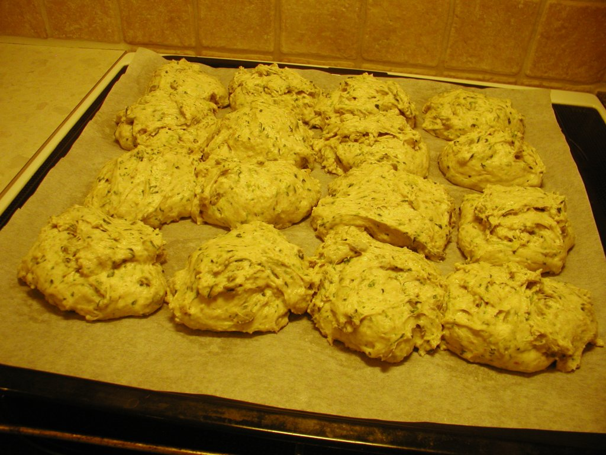
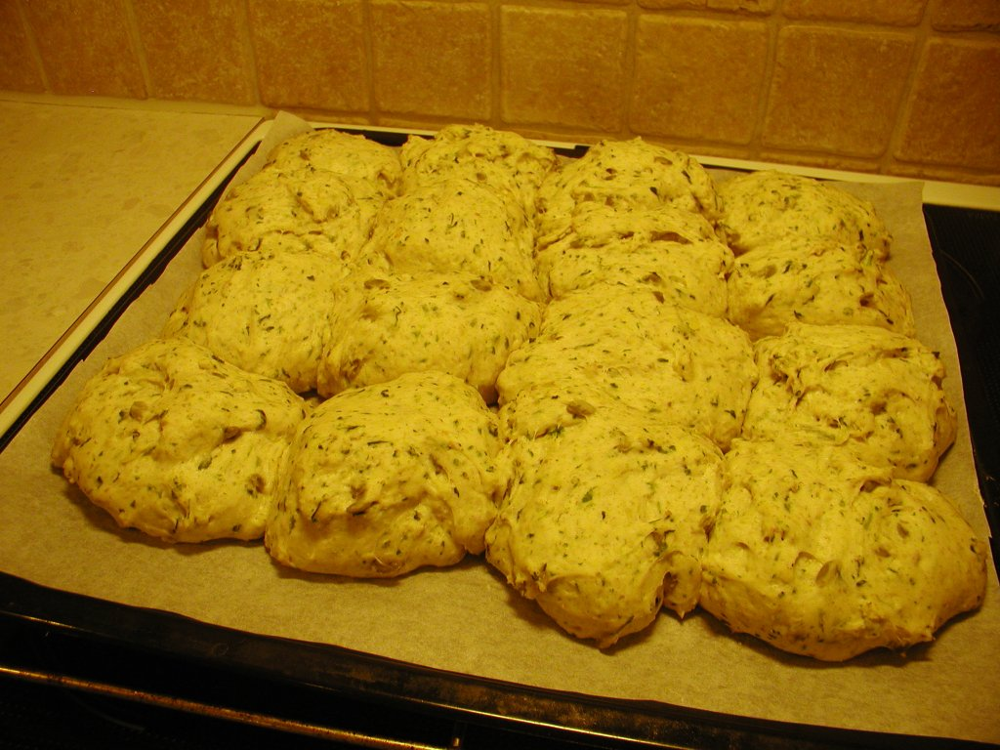

Kartoffel- og spinatbrud
Tid
Har du travlt?
Gå ikke i panik! Bag et snydebrød i stedet, det er klar til servering på en time! Og der er næsten ingen oprydning.
Lækkert madkassebrød!

Se siden om gærbrød generelt for teori, tips og tricks.
Den side, du kigger på lige nu, er mere sådan, gør dét, gør dét, ikke så meget snak ;-)
Ingredienser
Og dejen er for klistret til, at man kan ælte den på bordet!
(Jeg bager altid to plader brud af gangen, derfor tager jeg to skåle.)
1 plade brud, 16 eller 25 stykLækkerier:
|
*)
Hvis du ikke har kogte kartofler,
kan du i en snæver vending rive en rest
ovnbagte kartoffelbåde i.
Husk dog på, at de er salte i forvejen,
og at de ikke indeholder så meget vand som kogte kartofler.
Derfor skal der tilsættes lidt mere vand og evt lidt mindre salt.
**)
Der er mere salt i disse brud end i
gulerodsbruddene,
selvom opskrifterne ellers ligner hinanden.
Det er fordi både kartoffel og spinat "suger" saltsmagen.
***) Der skal en del vand i, fordi der ikke er så meget væske i de 200 g kartoffel og spinat.
Fremgangsmåde
-
Tænd en stegepande på fuldt knald.
Når den er brandvarm, så drys græskarkernerne ud i ét lag, og sluk med det samme for varmen.
De kan stå og hygge sig, mens du arbejder videre. - Hvis du bruger frossen spinat, så kom det i en skål og hæld 2½ - 3 dL kogende vand på.
-
Find en stor røreskål (5 eller 6 L).
Riv kartoflerne ned i skålen.
Snit det tøede (eller friske) spinat fint og hiv det i skålen.
Hæld ikke optøningsvandet væk! Det kan bruges i dejen senere. -
Hæld græskarkerner og tørstoffet i
(mel og salt).
Bland med piskeris eller grydeske. -
Vej olien i, dæk det med melet.
(Gæren bryder sig ikke specielt om at blive fedtet ind.) -
Smuldr gæren i en kop, hæld sukkeret på. Kom en lille bitte smule koldt vand på.
Rør med en gaffel (eller bagsiden af en teske), indtil det bliver tyndt som kakomælk. - Kom den flydende gær i melet.
- Vej vandet i (genbrug endelig optøningsvandet, hvis du brugte frossen spinat!)
-
Ælt!
Dejen til brudene er meget klistret, så i stedet for at sige "aaadd!" og fx prøve at bruge en røreske (eller - fy! - putte ekstra mel i), så jaw hænder i det, og nyd at lade dejen smatte ud og ind imellem fingrene ;-)
Og du bliver bare ved. Det er nu, du skaber konsistensen i brødet! det man kalder "krummen".
Hvis du tror, du er færdig, men ikke er helt sikker, så bliv ved lidt længere, det skader bestemt ikke ;-) -
Hæv første gang i skålen, cirka 30 - 45 minutter
under låg eller et (fugtigt) klæde.
Ryd op imens.
-
Sæt dejen på plade.
Vend skålen med dej på hovedet på et skærebræt. Den slipper (helt eller delvist) på et tidspunkt...
Så tager du en stor, skarp kniv og snitter/skubber med resolutte tag den næsten flydende dej over, så du kan sætte enten 16 eller 25 klatter på pladen.
 Hvis du arbejder for langsomt, så klistrer det mere!
-
Hæv anden gang på bageplade. Det er ikke nødvendigt at lægge et klæde over.
Dejen skal helst hæve til dobbelt størrelse igen, det tager 30 - 45 minutter.
Ryd op igen.Obs: Det er nemmere at gnide indtørret dej af skålen, end det er at skylle det af under vandhanen - så vent med at rydde skålen op, med mindre det er meget upraktisk.
-

Bag ved 225°C - midt i ovnen.
Bag i cirka 17 - 20 minutter (det er ligemeget om du har lavet 16 eller 25 styk).
-
Træk forsigtigt bagepapiret med brudene på fra bagepladen over på en rist.
Lad dem køle lidt (mindst 10 - 15 minutter), før du begynder at skære dem.
- Hvis du kan lide hård skorpe, så lad brødene hvile uden noget over.
-
Hvis du vil have en blød skorpe,
så dæk brudene med et viskestykke efter de første 5 minutter.
- Hvis du er kommet til at bage brudene alt for længe, så lad dem køle med plastik over i stedet (evt i en tynd plastikpose), så du holder mest muligt på den sidste fugt.